HowTo Add a new Bike to BikeDeed
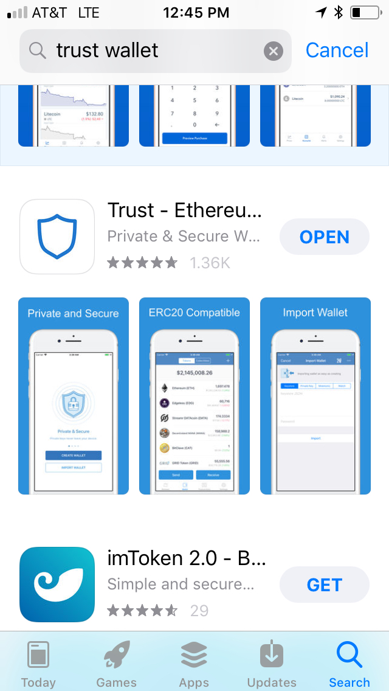
Open the Trust Wallet, click on the Browser Icon and go to https://bikedeed.io
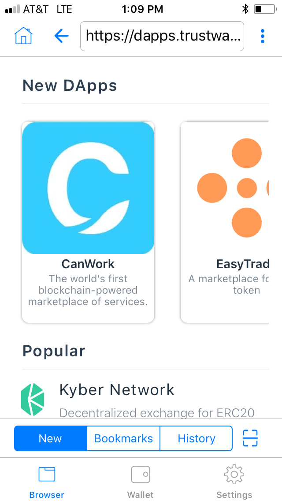
Click on "Add A Bike" menu item.

Click on "Select A Manufacturer" drop down.
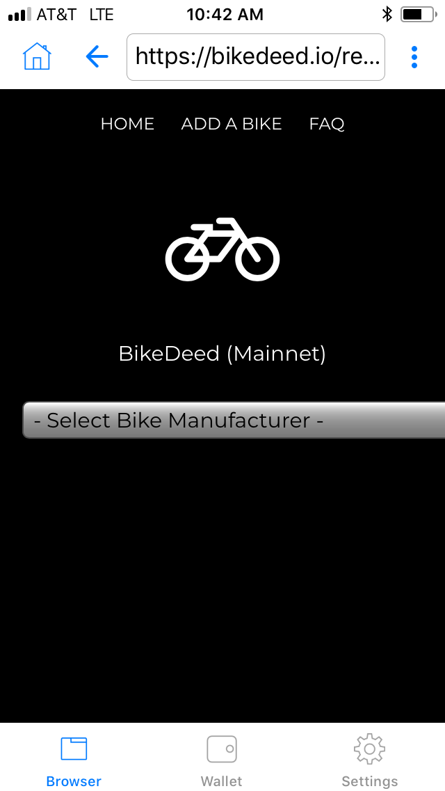
Select A Manufacturer from the drop down and click Done.
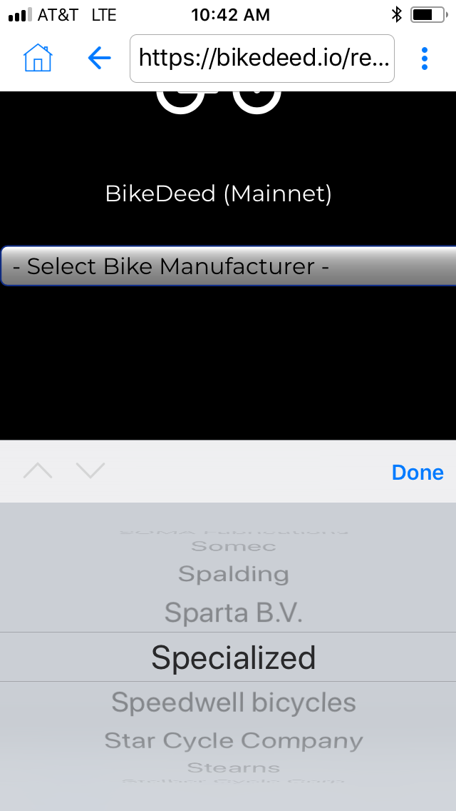
Type in the Bike's Serial Number into the Text input.
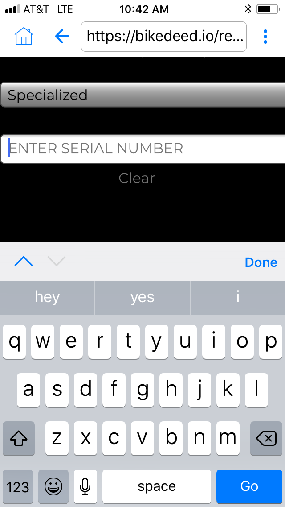
Click on "Choose a File" button.
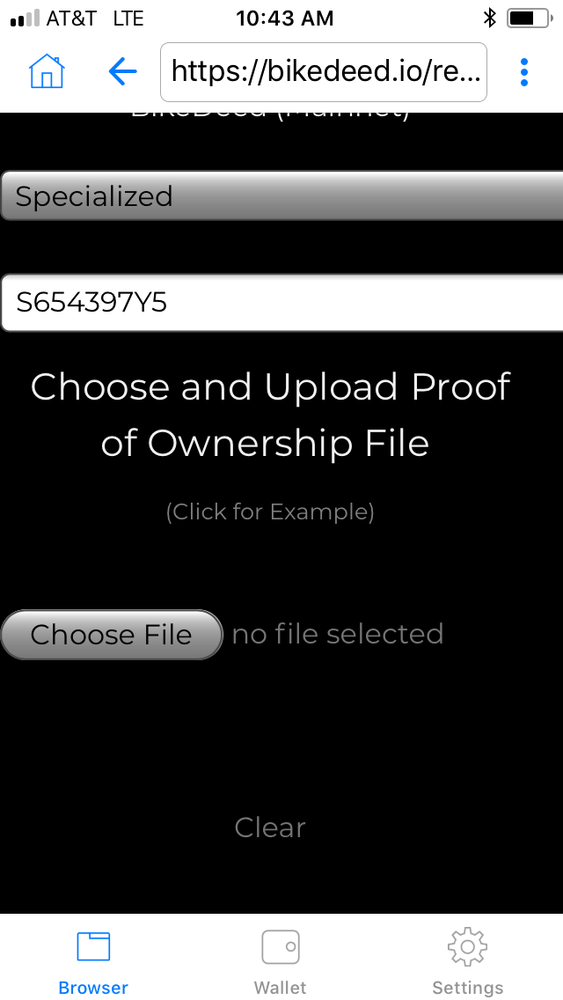
Click on "Take a Photo or Video"
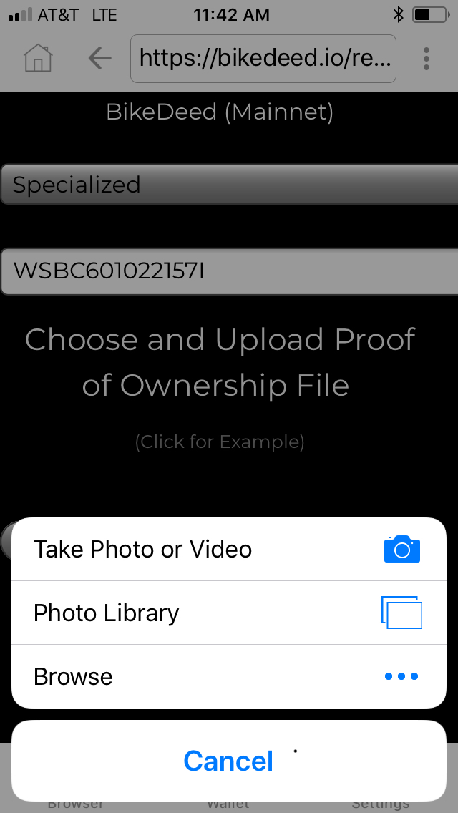
Use your Camera to take a photo of the Bike's Serial Number
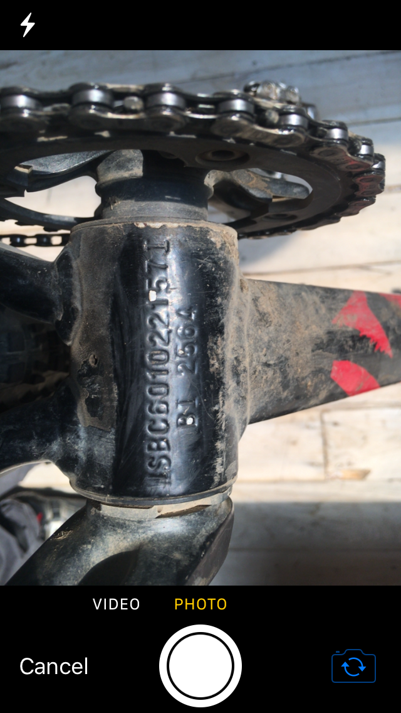
Click on the "Upload File to IPFS" button.
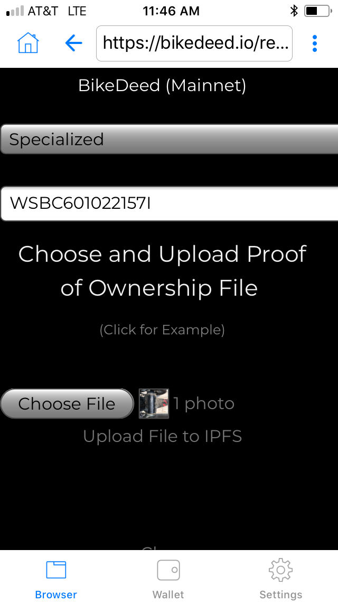
Click on the "Register Bike" button.
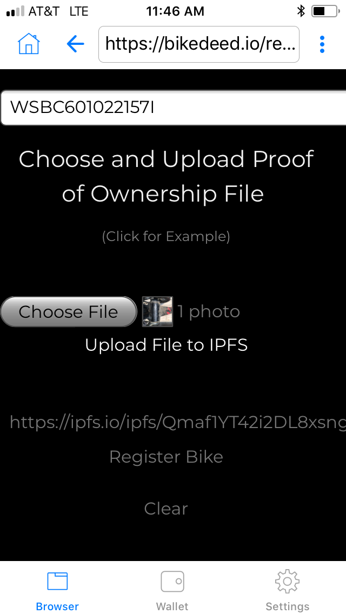
Click on the "Confirm Registration" button.
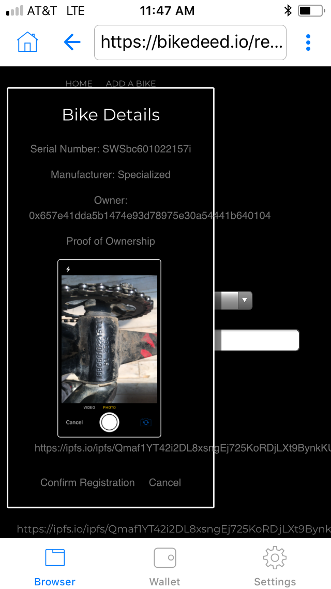
Use the Trust wallet to set the gas price and send the transaction.
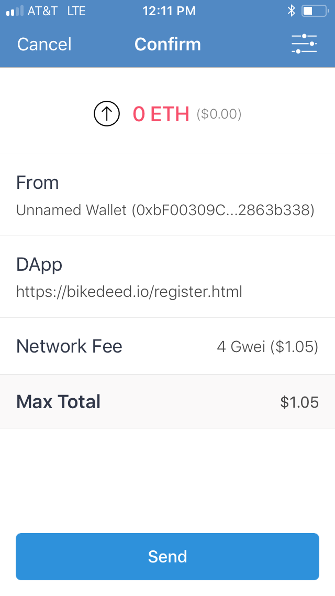
You will be presented with a Spinner indicating the progress of your transaction.
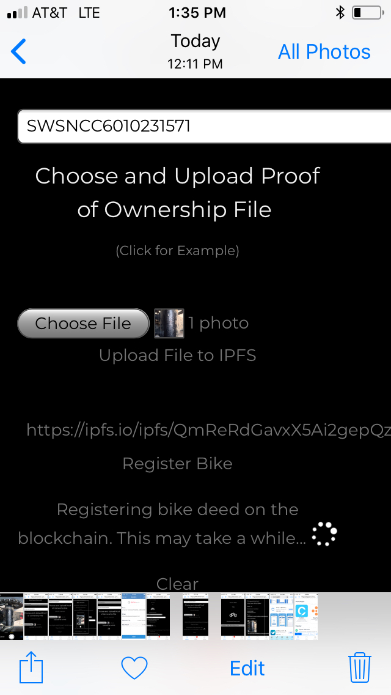
Return to https://bikedeed.io/index.html to see your new Bike Deed.